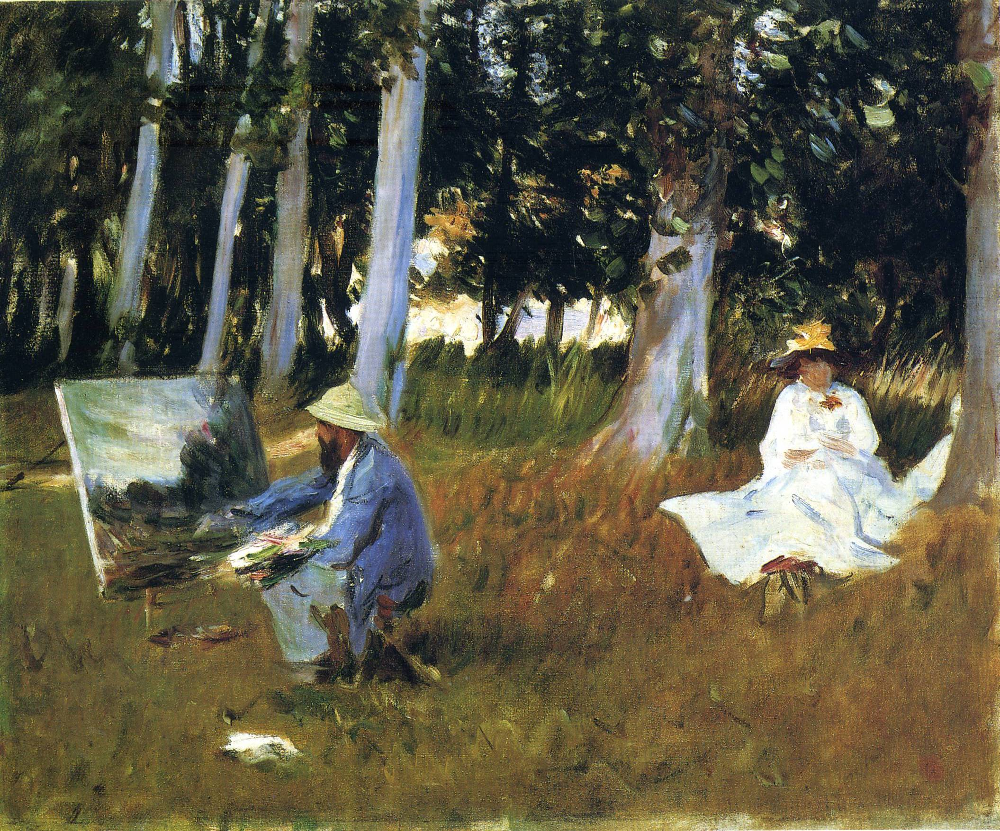
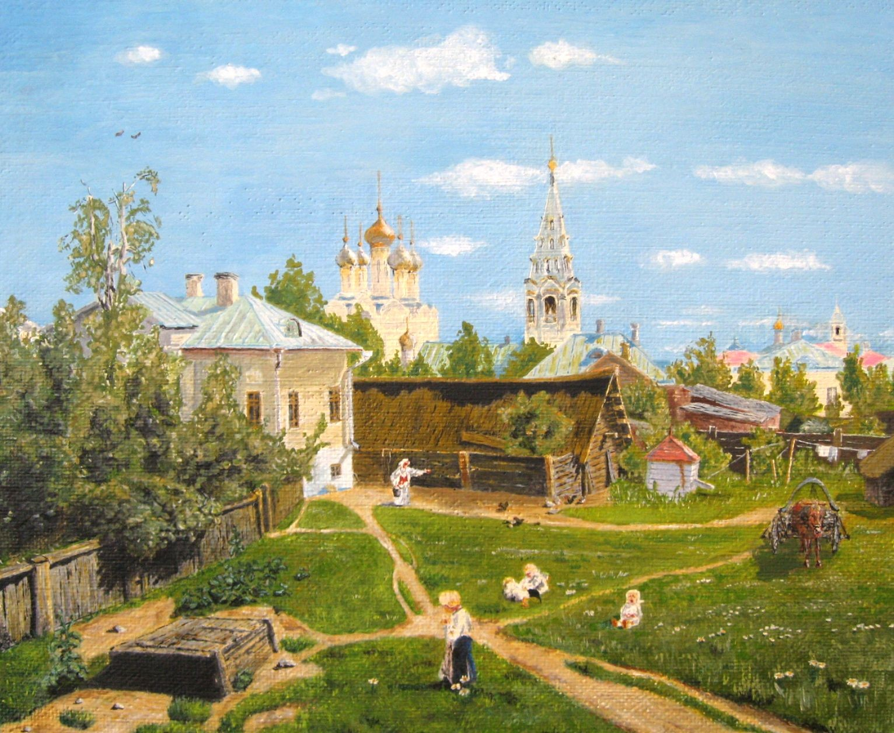
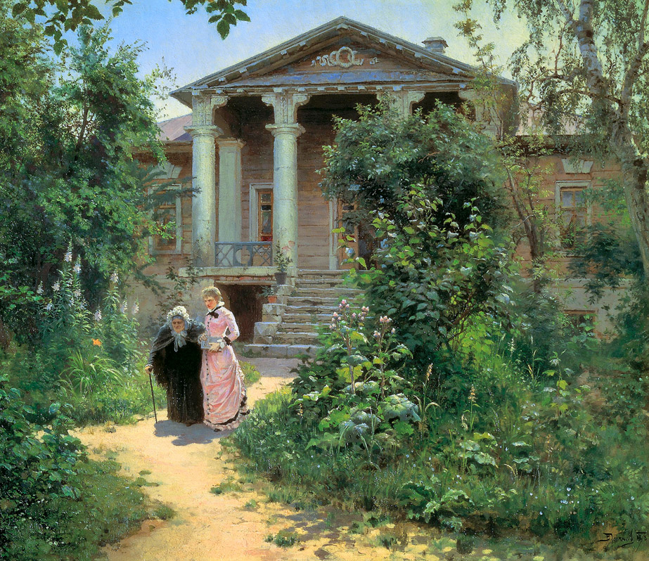
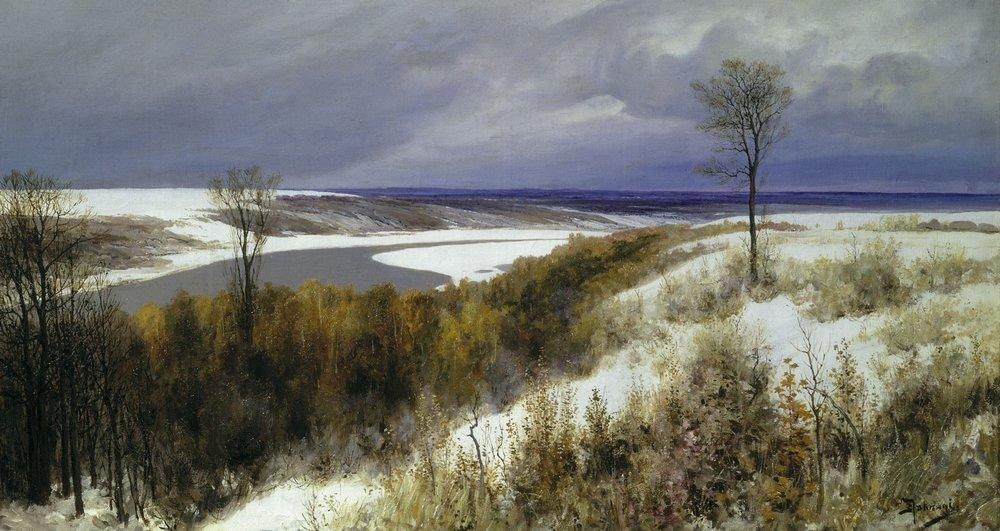
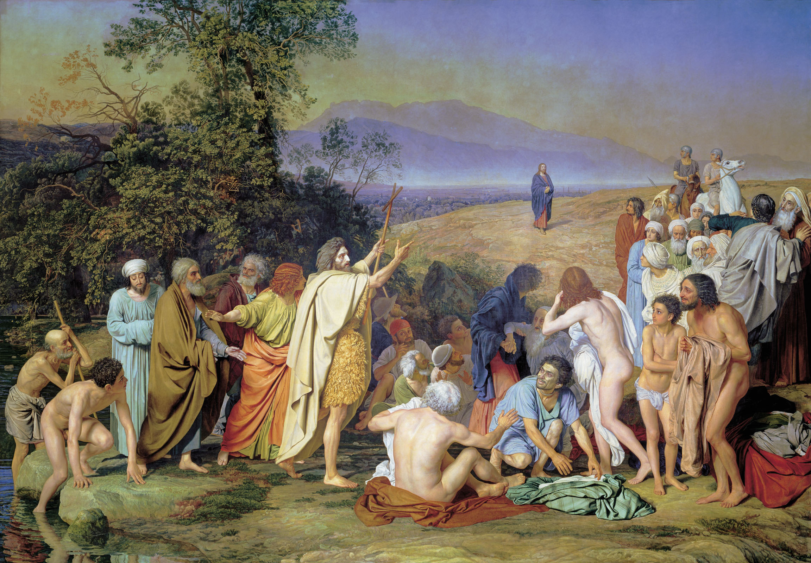
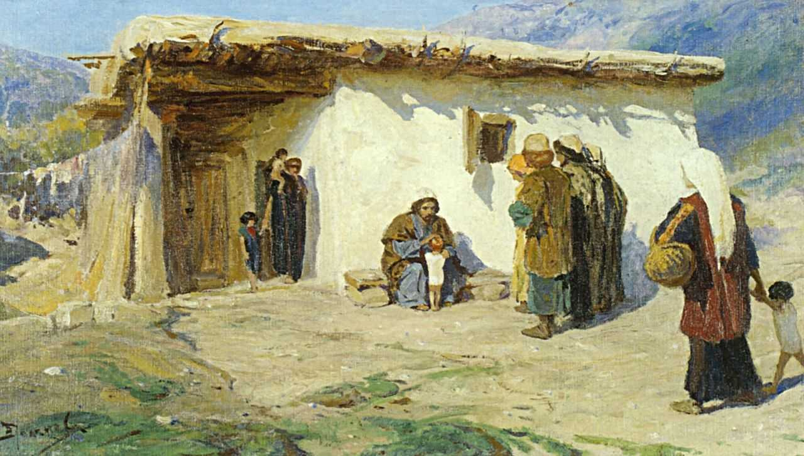

Василий Дмитриевич Поленов родился 20 мая /1 июня/ 1844 года в Петербурге в высокообразованной дворянской семье. Отец — Дмитрий Васильевич Поленов /1806–1878/, дипломат, страстно увлекался археологией и библиографией. Мать — Мария Алексеевна Поленова /1816–1895/, урожденная Воейкова, внучка архитектора Н. А. Львова, была детской писательницей и талантливой художницей.
Родители стремились воспитать в своих детях трудолюбие, всячески поощряя увлечение науками и искусством. Двое из пятерых детей стали художниками. Первые уроки рисунка и живописи детям давала Мария Алексеевна, затем пригласили студента Академии художеств П. П. Чистякова, впоследствии выдающегося рисовальщика и педагога. В 1860 годы Василий Дмитриевич занимался сразу в двух учебных заведениях Петербурга — Университете и Академии художеств. Весной 1871 года он закончил Университет со званием кандидата прав.
Осенью 1871 года В. Д. Поленов получил в Академии художеств большую золотую медаль за картину «Воскрешение дочери Иаира» и право поездки по Европе в течение 6 лет на средства Академии.
За годы путешествия Поленов испробовал все жанры живописи, много работал на пленэре, свидетельством чему являются многочисленные этюды, отличающиеся новизной выбранных мотивов, решением сложнейших пленэрных задач.
  «Одним из неожиданно больших праздников было появление на выставках первых интимных пейзажей Поленова в середине 70-х годов «Московский дворик», «Бабушкин сад», «Серый день» и ряд других тургеневских мотивов явились неожиданно ново, свежо, проникнуто правдой, тонким музыкальным лиризмом и изящной техникой», — писал в ту пору Остроухов. Поленов явился родоначальником новой русской живописи, дав жизнь лирическому пейзажу.
Продолжительное время художник работал над большим циклом картин из жизни Христа, стремясь «создать Христа не только грядущего, но уже пришедшего в мир и совершающего свой путь среди народа». Написано было более пятидесяти картин на евангельские сюжеты. Стремясь добиться исторической достоверности в написании работ, Василий Дмитриевич совершает путешествие по странам Востока. Из Сирии, Египта и Палестины было привезено огромное количество натурального материала, путевые заметки, костюмы.
80–е годы стали годами расцвета художественной и педагогической деятельности В. Д. Поленова. Двенадцать лет он преподавал в Московском училище живописи, ваяния и зодчества, где воспитал целое поколение первоклассных русских живописцев, в т.ч. И. Левитана, К. Коровина, И. Остроухова, А. Архипова, С. Иванова.
Заметное место в жизни художника занимала музыка. Не имея специального образования, он сочинял оперы и романсы, устраивал домашние музыкальные вечера.
Строительство усадьбы на живописном берегу реки Оки позволило художнику раскрыть еще одну сторону многогранного таланта. На Оке Поленов много работал: писал картины, сочинял музыку, сажал деревья в парке, строил дамбу, помогал строить лодки.
Со свойственной ему энергией занимался проблемами народного образования. Василий Дмитриевич построил две школы в окрестных деревнях. Последние его работы были тоже посвящены детям: в 20–е годы он создал диораму — кругосветное путешествие в картинках. Волшебные световые картины стали праздником для крестьянских ребятишек.
Василий Дмитриевич Поленов умер 18 июля 1927 года в возрасте 83 лет. В 1926 году одному из первых в России ему присвоили почетное звание Народного художника России. Похоронен Василий Дмитриевич на высоком берегу Оки в деревне Бехово, на простом деревенском кладбище. На могиле, как и следовало по завещанию, поставлен деревянный крест, сделанный по эскизу самого художника. Еще в 1906 году в своем художественном завещании Поленов писал: «Смерть человека, которому удалось исполнить кое-что из своих замыслов, есть событие естественное и не только не печальное, а скорее радостное, закономерное, это есть желанный отдых, покой, причем покой небытия, а бытие остается и переходит в то, что он сотворил».
Наверх